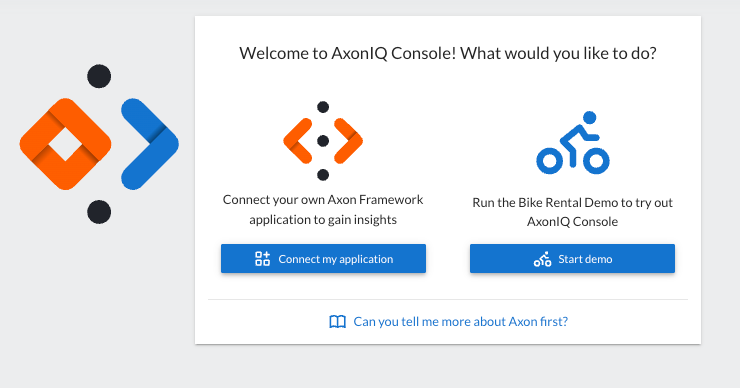

Prepare your Application for AxonIQ Console
This section will prepare and connect our Axon Framework-based application to AxonIQ Console. We will follow the steps provided by the AxonIQ Console interface after signing up and setting up our free AxonIQ Console account.
| If you did not follow the Building A Bike Rental Application tutorial and you do not have an Axon Framework-based application ready to connect to AxonIQ Console, you can also use a docker-based bike-rental application that we have prepared for you to easily start and connect to AxonIQ Console. Just skip to Using Docker-Based Bike-Rental Demo section of this guide. |
|
During the process of creating your account, AxonIQ Console presented you with the following panel to choose whether to "connect your application" or "start the demo".

The rest of this article corresponds to the instructions displayed when the "Connect my application" option is selected in this dialog. If you prefer to explore AxonIQ Console features using the demo application and you clicked on the 'Start Demo' button, you may want to refer to Using Docker-Based Bike-Rental Demo instead. |
Create AxonIQ Console workspace and environment.
After selecting the "Connect my application" option, the AxonIQ Console onboarding flow will ask you to name your "Workspace" and "Environment".
Workspaces are the way that AxonIQ Console groups and separates different applications. A good name for the workspace is the name of the project or software system that groups all the applications/modules that will connect to that space in AxonIQ Console.
In this case, we recommend that you use "Bike Rental" as the workspace’s name and click on the 'Continue' button.
Add AxonIQ Console client library
After creating the workspace, we must prepare our application to connect to AxonIQ Console. The process depends on whether our Axon Framework-based application is built using Spring Boot or plain Java.
.
In our case, we will use the Bike Rental application that we created during the Building A Bike Rental Application tutorial, built using Spring Boot, we should click the 'Spring Boot Starter' button.
The following screen instructs us to add the io.axoniq.console:console-framework-client-spring-boot-starter library to your application. The Axon Framework will use this library to connect to AxonIQ Console and send the necessary telemetry data from our application to check its behavior.
| If you want to know what kind of data is collected and sent to AxonIQ Console by this library, you can check it in the Data sent to AxonIQ section of the AxonIQ Console Framework Client project repository in GitHub |
So, go to the root pom.xml file of your bike-rental project and add the following:
<properties>
<console-framework-client.version>1.7.3</console-framework-client.version>
</properties>
<dependencyManagement>
<dependencies>
<dependency>
<groupId>io.axoniq.console</groupId>
<artifactId>console-framework-client-spring-boot-starter</artifactId>
<version>${console-framework-client.version}</version>
</dependency>
</dependencies>
</dependencyManagement>With this dependencyManagement, we will ensure that the version of the a console-framework-client-* library is the same in all the modules we connect.
Next, add the library to the payment and rental modules. Go to their respective pom.xml files and add the following:
<dependencies>
<dependency>
<groupId>io.axoniq.console</groupId>
<artifactId>console-framework-client-spring-boot-starter</artifactId>
</dependency>
</dependencies><dependencies>
<dependency>
<groupId>io.axoniq.console</groupId>
<artifactId>console-framework-client-spring-boot-starter</artifactId>
</dependency>
</dependencies>
If you are using the version of the bike-rental application that has split the rental module into multiple microservices/rental-* modules, you should add the console-framework-client-spring-boot-starter library to the pom.xml of each microservice.
|
After adding the dependencies to your projects, update your Maven project and ensure that the console-framework-client-spring-boot-starter library is on the classpath of your modules.
|
Once you have added the dependency, click the Next Step button.
Configure AxonIQ Console credentials in your app
In this step, we will configure our rental and payment modules with the credentials to connect and send data to the workspace we created for our project.
The dialog AxonIQ Console displays in this step allows you to give the module a name and configure the amount of data you want to send to AxonIQ Console from the dead-letter queues.
Once you have provided this information, the panel below will update with the properties you need to configure in your applications' application.properties files.
The axoniq.console.credentials token is specific to your workspace and should never be shared publicly. The token will be the same for all the applications/modules that connect to the same workspace (in this case, for both the rental and payment modules), but it will be different for other projects or workspaces.
|
So, let’s add these properties to our rental' and `payment' modules. First, open the `application.properties file in your rental folder and add the following properties (copy and paste from the AxonIQ Console dialog above)
axoniq.console.application-name=Rental module
axoniq.console.credentials=<your credential token here>
axoniq.console.dlq-mode=NONENext, do the same with the application.properties file in the payment module:
axoniq.console.application-name=Payment module
axoniq.console.credentials=<your credential token here>
axoniq.console.dlq-mode=NONE
If you are using the version of the bike-rental application that has split the rental module into multiple microservices/rental-* modules, you will need to configure these properties in the src/main/resources/application.properties file for each microservice module.
|
Click on the Next button to continue.
Connect your application to AxonIQ Console
We have everything configured in our Axon Framework-based application to connect to AxonIQ Console. AxonIQ Console will now display a panel indicating that it is waiting for our application to connect.
Now, all you need to do is run your local application. Start both the payment and rental modules from your IDE as we did in the Running your application in your local environment with Docker Compose step of the tutorial.
After launching the applications, you should see the connection in AxonIQ Console:
You are ready to monitor your application with AxonIQ Console
Congratulations, you have connected your Axon Framework-based applications to AxonIQ Console.
Click on the "Go to my workspace" button to access all the information provided by AxonIQ Console from your application. This will display the main AxonIQ Console dashboard for your application:
The dashboard contains several tabs that group the information collected from the modules that are connected to AxonIQ Console. These tabs and the information they contain are briefly described in the AxonIQ Console Getting Started Guide
|
You can explore a little bit the information provided in the different tabs, but since the application is idle, the information will not be much useful at this time. If you are using your own application it would be useful to have a script that invokes some of the endpoints of the application to keep it under certain workload. If you are using the If you are using the docker-based |